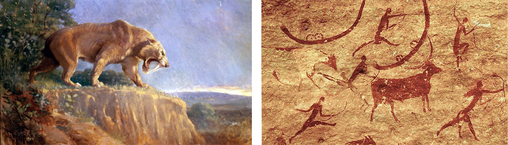
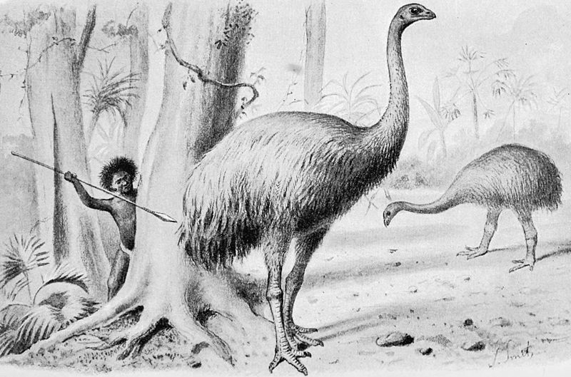
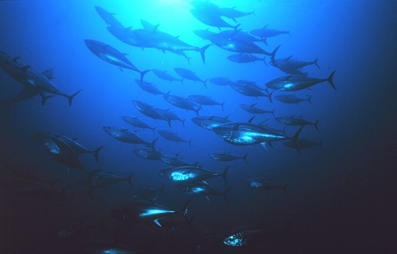
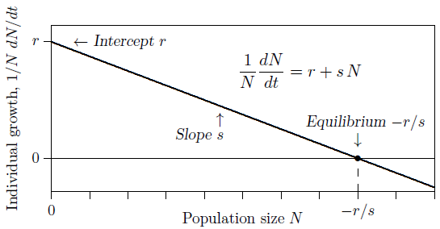
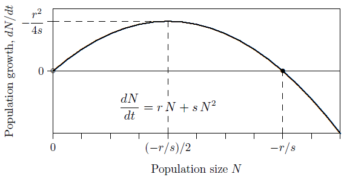
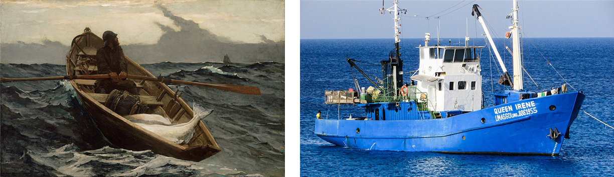
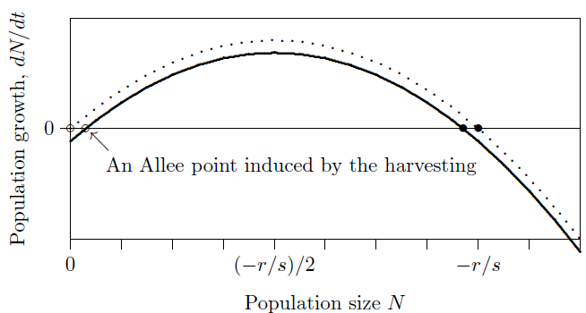
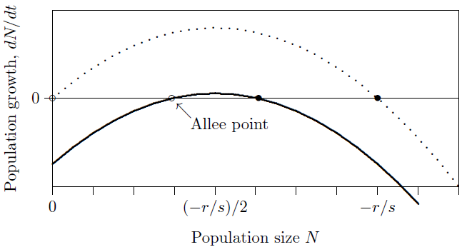
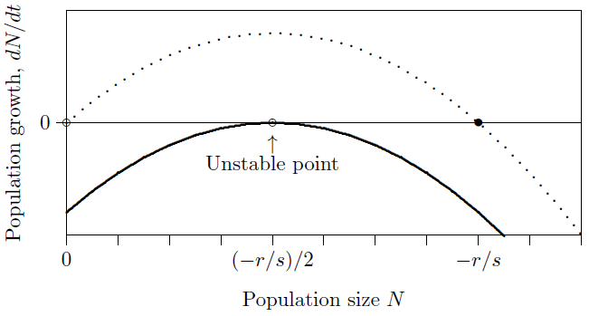
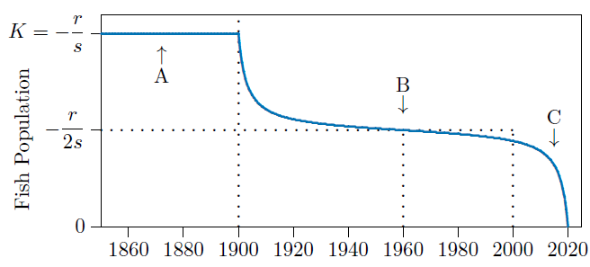

# SIMULATE ONE YEAR
#
# This routine simulates a differential equation for optimal
# harvesting through one time unit, such as one year, taking
# very small time steps along the way.
#
# The 'runif' function applies random noise to the population.
# Therefore it runs differently each time and the collapse
# can be rapid or delayed.
#
# ENTRY: 'N' is the starting population for the species being
# simulated.
# 'H' is the harvesting intensity, 0 to 1.
# 'K' is the carrying capacity of the species in question.
# 'r' is the intrinsic growth rate.
# 'dt' is the duration of each small time step to be taken
# throughout the year or other time unit.
#
# EXIT: 'N' is the estimated population at the end of the time
# unit.
SimulateOneYear = function(dt)
{ for(v in 1:(1/dt)) # Advance the time step.
{ dN = ((r+s*N)*N + H*r^2/(4*s))*dt; # Compute the change.
N=N+dN; } # Update the population value.
if(N<=0) stop("Extinction"); # Make sure it is not extinct.
assign("N",N, envir=.GlobalEnv); } # Export the results.
r=1.75; s=-0.00175; N=1000; H=0; # Establish parameters.
for(t in 1850:2100) # Advance to the next year.
{ if(t>=1900) H=1; # No harvesting until 1900.
print(c(t,N)); # Display intermediate results.
N = (runif(1)*2-1)*10 + N; # Apply stochasticity.
SimulateOneYear(1/(365*24)); } # Advance the year and repeat.13 Humans as predators
Early humans suffered from predators just as other primates suffer still. Eventually, though, they developed spears longer than the longest teeth and became one of the top predators on land. Even if they did not eat sabre-tooth tigers, they were able to kill them. We know from vivid paintings on rock walls in the protected shelter of caves that our ancestors at least fancied themselves as hunters (Figure 13.1).
Humans are now the dominant large vertebrate on the planet. But on all the continents beyond Africa, large vertebrates were prominent in the ecosystems before our ancestors arrived. In Africa many remain, coevolved with humans and perhaps wiser to our ways. Elsewhere, however, they had little fear when our ancestors arrived (Figure 13.2).


The reasons behind the extinction of so many megafauna are controversial. Archeologist Haynes and others believe humans are responsible. Archeologist Grayson and others blame climate change, though animals had been through many glaciations and deglaciations before. Mammalogist MacPhee and virologist Marx postulate a virulent “hyperdisease” brought by humans. And geologist Kennett and colleagues assign a comet impact as the cause—an interesting theory, as some major human hunters disappeared at about the same time as the larger mammals.

In any case, when something extreme happens, several causes may be working in concert. We do know from historical records that only about one human lifetime ago our predecessors in North America hunted bison almost to extinction. Now the large remaining populations of megafauna are in the seas (Figure 13.3). What is their fate?
13.1 Consciously controlled predation
Consider predation by humans that is not subject to the cyclical dynamics of natural predator–prey interactions, but is instead consciously controlled to provide steady, reliable returns—from the world’s fisheries, for example. How is this attempted?
Recall logistic population growth, where the ecological term \(s\) is negative. Figure 13.4 shows the individual growth rate on the vertical axis and the population density on the horizontal axis, as you have seen before. Individual growth means the same thing as growth per capita, or relative growth, or percentage growth if multiplied by 100. The intention is to apply this to logistically growing populations of prey.

It is the growth rate of the whole population, however, that is of interest in controlled predation—not the per capita growth rate—since it is a fraction of the whole population that is to be taken. So the vertical axis should show \(dN/dt\) rather than \(\frac{1}{N}\frac{dN}{dt}\). Start with the individual growth rate, which reaches its maximum \(r\) as \(N\) approaches 0. Here the population produces very few individuals, because the population itself is almost nonexistent.
\[ \frac{1}{N}\frac{dN}{dt} = r + sN \]
The goal is to maximize the population growth rate so that the greatest number of prey can be taken. To find that number, multiply both sides of the equation above by the number of individuals, \(N\), to get the growth rate of the entire population—in other words, to determine how many individuals are added to the population in a unit of time. The result is
\[ \frac{dN}{dt} = rN + sN^2 \]
The growth of the entire population, \(dN/dt\), has the shape of an inverted parabola, shown in Figure 13.5, since \(s\) is negative. Population growth is lowest when the population is very small, near 0, or when it is high, near its carrying capacity, \(-r/s\). It reaches its maximum growth rate midway, at half the carrying capacity, \((-r/s)/2\). So if the population is kept at half its carrying capacity, it will be growing its fastest and the greatest amount can be “harvested” each year.

What is that maximum rate? To find it, substitute half the carrying capacity, \(-r/(2s)\), for \(N\) in the equation above, giving
\[ \begin{aligned} \left.\frac{dN}{dt}\right|_{\max} &= r\left(-\frac{r}{2s}\right) + s\left(-\frac{r}{2s}\right)^2 \\ &= -\frac{r^2}{2s} + s\,\frac{r^2}{4s^2} \\ &= -\frac{r^2}{4s} \end{aligned} \]
So in this theory the population grows most rapidly at rate \(-r^2/(4s)\), producing the greatest number of new individuals if drawn down to half its carrying capacity. This has been called the “maximum sustainable yield.”

Let us introduce a harvesting intensity, \(H\). When \(H\) is zero, there is no harvesting, and when \(H\) is 1, harvesting is at the maximum sustainable rate. In between it is
\[ \frac{dN}{dt} = \left( rN + sN^2 \right) + H\frac{r^2}{4s} \]
Let’s break this equation down:
- \(\frac{dN}{dt}\): the net rate of population growth, the number of individuals per time unit, considering births, deaths, and hunting.
- \(\left( rN + sN^2 \right)\): the rate of addition (in parentheses), the number of individuals born per time unit minus those dying from causes other than hunting.
- \(H\frac{r^2}{4s}\): the rate of removal, the number of individuals caught per time unit (this term is negative, because \(s\) is negative).
If individual fishermen predominate (Figure 13.6, left), \(H\) will be small. This pulls the curve down, as in Figure 13.7, lowering the carrying capacity slightly and leaving somewhat fewer fish in the sea. It also introduces an Allee point, though that point is far below the equilibrium and therefore not a significant danger.

But with increasingly focused and mechanized fishing (Figure 13.6, right), \(H\) approaches 1 and the curve is pulled farther down (Figure 13.8). The carrying capacity is markedly reduced and the population produces new individuals at a large rate. And the Allee point is pulled close to the carrying capacity, introducing a danger that unforeseen fluctuations in the population could push the population below the Allee point and collapse the fishery.


Finally, with hunting or fishing at the maximum sustainable yield, the Allee point coincides with the carrying capacity and in effect annihilates it (Figure 13.9). This introduces a dynamical conflict because there is a stable situation to the right but an unstable one to the left, making it inevitable that the population will fall below the Allee point and collapse. The maximum sustainable yield is not sustainable!
13.2 Stochastic modelling
Program 13.1 simulates harvesting at the so-called maximal sustainable yield. It introduces small random fluctuations in the population—so small that they cannot be discerned in a graph. The slight stochasticity makes the program take a different trajectory each time it runs, with widely different time courses. Inevitably, however, the populations drift below the Allee point and rapidly collapse, as in the sample run of the program shown in Figure 13.10.
In the age of sailing, at the arrow marked A, fishing was high-effort but low-impact and fisheries stayed approximately at their carrying capacity, \(K\). “Optimal harvesting” was introduced once mathematical ecology combined with diesel technology, and fisheries helped feed the growing human and domestic animal populations, with fish populations near “maximum sustainable yield,” as expected. But throughout the 20th century, as shown on either side of the arrow marked B, fish populations continued to decline, and before 2015—at the arrow marked C—it becomes clear that something is seriously amiss.
What happened? A collapse is part of the dynamics of this kind of harvesting. Inevitable stochasticity in harvest combines unfavorably with an unstable equilibrium in the prey population. In some runs it collapses in 80 years, in others it may take 300. The timing is not predictable; the main predictable property of the simulation is that ultimately the system will collapse.
13.3 Present situation
Many of the world’s fisheries are under collapse, and in the oceans we seem to be on a path like the one our predecessor predators took on land.
There are better ecological approaches—a “constant effort” approach, for example, rather than the “constant harvest” examined here—but economic, social, and political pressures have kept them from extensive use.
We hope this chapter has shown you that insufficient examination of ecological equations applied on a large scale can generate disasters, that equilibria must not be considered apart from their stability, and that management of real ecological systems requires attention to natural history and social conditions.
